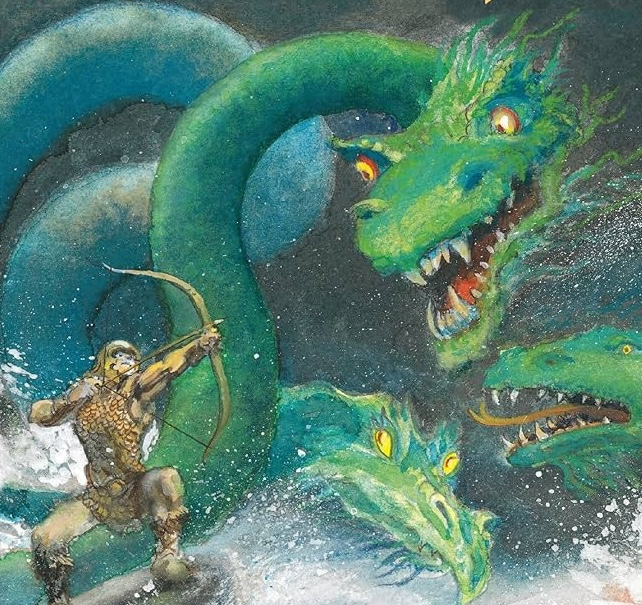
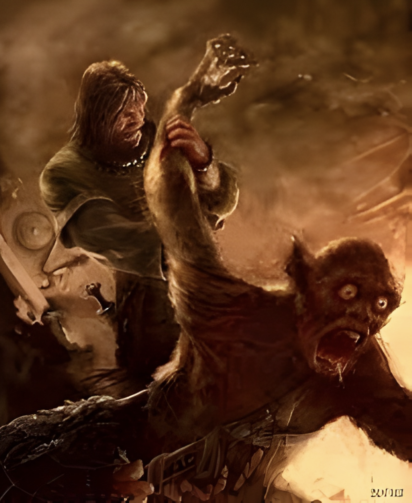
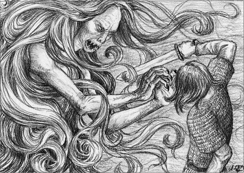

Lines 459–472
My father Ecgtheow killed Heatholaf, nearly starting a war with the Wulfings. His people kicked him out, so he went to Danish King Hrothgar, son of Halfdane, who bribed the Wulfings to drop it and saved my dad. My father's feuds are my feuds, and his allegiances are mine, so I will help Hrothgar when he needs me someday.

My Noble Birth & Family
I am born as Beowulf, son of Ecgtheow, nephew of Hygelac, King of the Geats, grandson of Hrethel, former King of the Geats, cousin of Headred, future King of the Geats. I seek only glory and immortality through my legacy.

Lines 553–579
I go swimming with Breca and get attacked by sea-beasts. It does not end well for them: "in the morning, mangled and sleeping the sleep of the sword, they slopped and floated like the ocean's leavings" (566-68). Later, I mog Unferth using this story."

Lines 740–830
I save King Hrothgar and the Danes by killing the monstrous Grendel, descendant of Cain. I maim him, rip off his arm as a trophy, and later go back for his head, which I proudly display on a pike. I receive lots of gold and glory for this feat.

Lines 1500–1570
I kill Grendel's Mother (a tarn-hag and swamp-thing from hell) with a magic sword I found in a swamp and save the Danes, again.

Lines 2200–2210
My uncle and cousin die in wars with the Frisians and Swedes. I avenge my cousin by killing Onela the Swede and become King of Geatland.